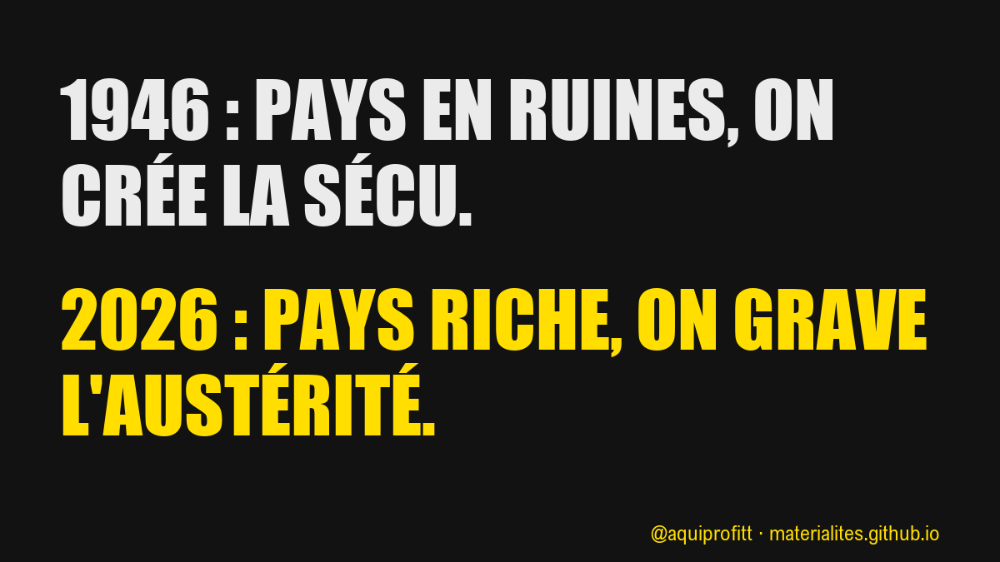

Réponse · 23 novembre 2026
1946, pays en ruines : on crée la Sécu. 2026, pays riche : on grave l'austérité
L’idée reçue
« Il n'y a pas d'argent : il faut graver l'austérité dans la Constitution. »

1946. La France sort de la guerre. Des villes entières sont détruites, les usines tournent au ralenti, on mange avec des tickets de rationnement. C'est à ce moment-là qu'on crée la Sécurité sociale : l'assurance maladie pour tous les salariés, les retraites, les allocations familiales.
Personne n'a dit alors « il n'y a pas d'argent ». Le régime général est financé par la cotisation : une part du salaire mise en commun dès la fiche de paie, sans passer par l'impôt ni par les marchés. Et il est géré en grande partie par les représentant·es des salarié·es eux-mêmes. Le ministre du Travail, Ambroise Croizat, ancien ouvrier métallurgiste et communiste, en pilote la mise en place avec les militants de la CGT, qui montent les caisses.
Ce qui a rendu cela possible, ce n'est pas la richesse : le pays était en ruines. C'est le rapport de force. Le patronat sortait discrédité de la guerre, le mouvement ouvrier était puissant, et il a imposé que l'argent aille d'abord à la santé, à la vieillesse et aux enfants.
2026. La France produit plusieurs fois plus de richesses qu'en 1946. Et on veut graver dans la Constitution qu'il faut dépenser moins : c'est le projet de « règle d'or » évoqué par Emmanuel Macron le 22 novembre. Ce n'est pas l'argent qui manque. C'est le choix de qui paie qui a changé de camp.
Ce qu'on nous répond : « en 1946, la dette était énorme, et c'est la croissance qui a tout payé ». C'est vrai, la dette de l'après-guerre était très lourde. Mais elle n'a pas été remboursée par l'austérité : elle a fondu avec la croissance et l'inflation, pendant qu'on construisait la Sécu, les logements et les services publics. Exactement l'inverse de ce que propose une règle d'or.
Les sources
Pour aller plus loin
 vidéoDE DE GAULLE À MACRON. SÉCURITÉ SOCIALE : HISTOIRE D'UN SABOTAGE | BERNARD FRIOTDe de Gaulle à Macron : comment la Sécu construite en 1946 a été reprise morceau par morceau.podcastpodcastLa bataille de la Sécu, retour sur le régime de la Sécurité sociale – avec Nicolas Da SilvaLa bataille de la Sécu : qui l'a construite, qui la gérait, et ce qu'on en a fait depuis.articlearticleL’État social contre la SocialeUn article qui distingue l'État social de « la Sociale » gérée par les travailleur·euses.
vidéoDE DE GAULLE À MACRON. SÉCURITÉ SOCIALE : HISTOIRE D'UN SABOTAGE | BERNARD FRIOTDe de Gaulle à Macron : comment la Sécu construite en 1946 a été reprise morceau par morceau.podcastpodcastLa bataille de la Sécu, retour sur le régime de la Sécurité sociale – avec Nicolas Da SilvaLa bataille de la Sécu : qui l'a construite, qui la gérait, et ce qu'on en a fait depuis.articlearticleL’État social contre la SocialeUn article qui distingue l'État social de « la Sociale » gérée par les travailleur·euses. vidéoSÉCURITÉ SOCIALE, SALAIRE À VIE, RETRAITE ET CAPITAL - BERNARD FRIOTUne heure avec Bernard Friot sur la cotisation, la retraite et ce que la Sécu dit du salaire.
vidéoSÉCURITÉ SOCIALE, SALAIRE À VIE, RETRAITE ET CAPITAL - BERNARD FRIOTUne heure avec Bernard Friot sur la cotisation, la retraite et ce que la Sécu dit du salaire.